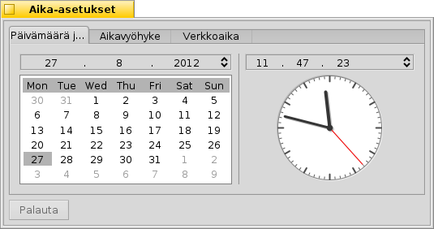
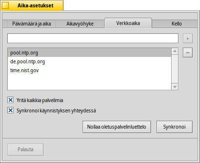
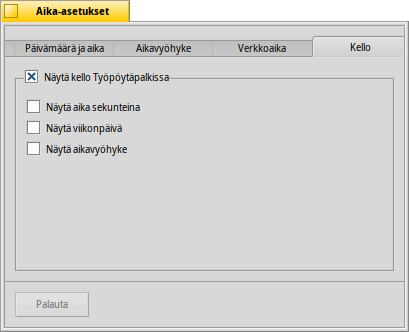

Aika-asetukset
Aika-asetukset
| Työpöytäpalkki: | ||
| Sijainti: | /boot/system/preferences/Time | |
| Asetukset: | ~/config/settings/networktime settings - Kaikki asetukset, jotka koskevat ajan synkronointia verkon kautta ~/config/settings/RTC_time_settings - Laitteistokellon asetukset (paikallinen tai GMT) ~/config/settings/Time settings - Aikavyöhykeasetukset ~/config/settings/Time_preflet_window - Paneelin ikkuna-asetukset jne. |
Aika-asetukset-paneeli on jaettu neljään välilehteen:
 Päivämäärä ja aika
Päivämäärä ja aika

Vasemmalla puolella voit asettaa päivämäärän ja kuukauden yksinkertaisesti napsauttamalla sitä kalenterissa. Vaihdat kuukautta ja vuotta napsauttamalla sitä ja käyttämällä oikealla nuolinäppäimiä ylös ja alas tai näppäimistösi kohdistinnäppäimiä.
Samalla tavalla asetat ajan oikealla. Tai siirrät yksinkertaisesti kelloviisarit suoraan.
Aikavyöhyke

Yksinkertaisesti etsi ja valitse maasi mannerluettelosta ja paina . Niissä maissa, joissa on useampi kuin yksi aikavyöhyke, luetteloa on laajennettava yksi taso syvemmälle.
Oikealta löydät nykyisin asetetun aikavyöhykkeen ajan ja valitsemasi aikavyöhykkeen esikatseluajan.
Oikealla puolella on on myös tietokoneesi laitteistokellon asetukset. Siinä on kellolle kaksi tilaa:
| näyttää paikallisaikasi, jota haluat käyttää normaalisti, jos kaksoiskäynnistät tietokoneesi Windowsiin. | ||
| näyttää Greenwichin ajan, joka on UNIX-yhteensopiva asetus. |
Verkkoaika
Päivämäärän ja ajan asetus on aika paljon vanhentunut, jos olet kytkeytyneenä internettiin. Siellä on julkisia palvelimia, jotka lähettävät hyvin tarkkoja aikasignaaleja.
Painikkeilla +/ voit lisätä/poistaa NTP-palvelimia luetteloon tai luettelosta.
Valintaruudut alla kehottavat järjestelmää kun synkronisoidaan, ei vain valittua palvelinta, ja , joten voit olla varma, että kello näyttää aina oikein.
Voit jos vahingossa poistat toimivia NTP-palvelimia ja da kellosi manuaalisesti. Synkronointi voidaan suorittaa myös komentoriviltä (tai skriptillä):
Time --update
Kello

Viimeinen välilehti näyttää Työpöytäpalkissa näytettävän kellon valitsimet. Voit ottaa kellon kokonaan pois käytöstä ylimmällä valintaruudulla. Loput ovat itsensä selittäviä.
Jokaisessa välilehdessä on painike , joka tuo takaisin asetukset, jotka olivat aktiivisia kun käynnistit aika-asetukset-sovelluksen.